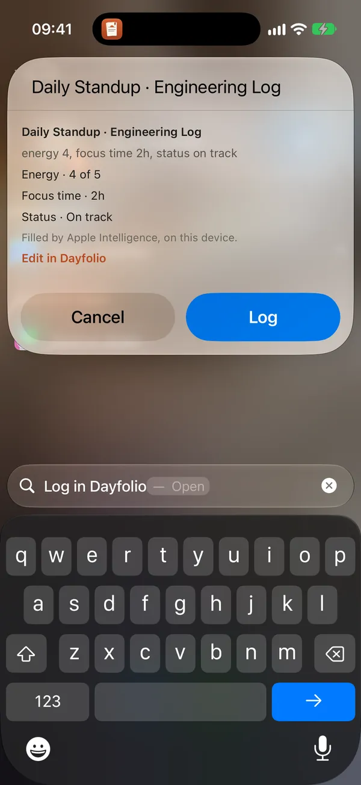
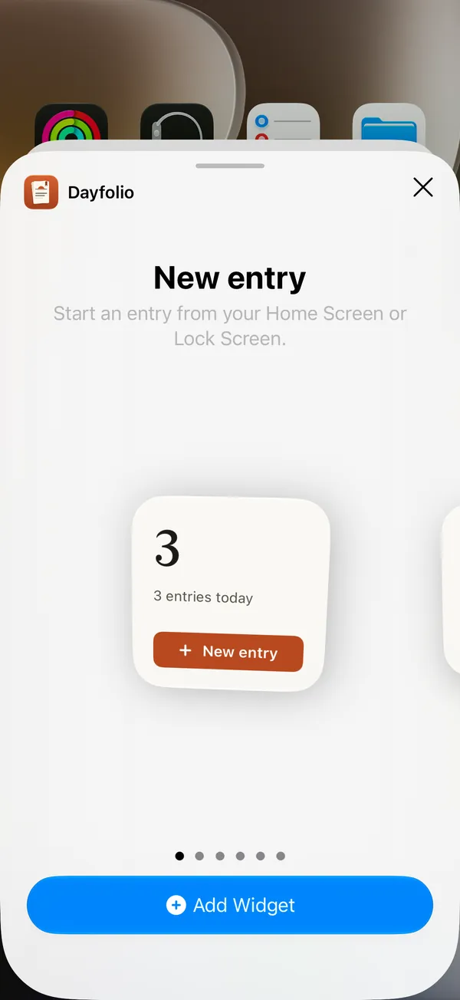

Siri, Shortcuts, widgets, Control Center and Focus
Dayfolio works from outside the app too: you can log a line by voice, start today’s entry from your Home Screen, stop a timer from the Lock Screen and keep reminders quiet while you focus. None of these ever show or offer a journal you lock.
Siri and Shortcuts
Dayfolio’s actions are ready in the Shortcuts app and for Siri, with no setup:
| Action | What it does | Where |
|---|---|---|
| Log in Dayfolio | Writes an entry from what you say or type | iPhone, iPad and Mac |
| Make this week’s report | Opens Reports with the weekly report made, ready to read | iPhone, iPad and Mac |
| Get today’s focus time | Answers with today’s total, such as “Focus time today: 1h 30m.” | iPhone, iPad and Mac |
| Quick note | Saves a note without opening the app | iPhone and iPad |
| New entry | Opens the New entry sheet | iPhone and iPad |
Say, for example, “Log in Dayfolio”, “Tell Dayfolio what happened” or “Add a quick note in Dayfolio”. On a locked device, each action asks for Face ID, Touch ID or your passcode first, and you can also run them from Spotlight, the Action Button or your own shortcuts.
Log in Dayfolio
Say it once, and Dayfolio fills in the fields.
- Say “Log in Dayfolio”. Siri asks “What happened?”
- Say what you did, such as “Standup, energy 4, two hours of focus on the payments API, status on track”.
- Dayfolio picks the journal’s template and fills its fields from your words. Where Apple Intelligence is available, it does this on your device; otherwise it reads your words as the Fill line does.
- A confirmation shows the entry and what was filled, before anything is written. Choose Log to write it, or Edit in Dayfolio to finish it in the app.
A client or person you name, as in “client Brightline” or “with Maya”, is filled in when you already have one by that name, and their open items carry over. Nothing is written before you choose Log.

Widgets on iPhone and iPad
Add Dayfolio’s widgets from the widget gallery, as you would any app’s.
- New entry: a small widget with today’s entry count, and Lock Screen widgets, each starting an entry.
- Journals: a medium widget with buttons for up to three journals.
- Rate today: set today’s energy or mood with a tap.
- Today’s timer: start timing today’s focus time.
- Today’s checklist: tick items off today’s checklist, such as what you shipped.
The last three act on today’s entry in the journal you choose when you set the widget up: the first rating or mood, the first duration that counts in Insights, or the first checklist. If today’s entry doesn’t exist yet, the first tap makes it. On a locked device, each tap asks for Face ID, Touch ID or your passcode first.
The New entry and Journals widgets show no entry content, only journal names and today’s count. The other three show the value or the items they act on, and the system hides those wherever it hides private information. A journal you lock is never offered.

Control Center, the Lock Screen and the Action Button
On iPhone and iPad, Dayfolio adds two controls you can put in Control Center, on the Lock Screen or on the Action Button:
- New entry opens the New entry sheet, in a journal you choose. Switch on What’s next and it opens with the entry Dayfolio thinks you want now, with the reason: “Because of your 09:00 reminder”, “Your 14:00 meeting ended” or “Nothing written today”.
- Dayfolio timer shows a running timer and stops it. With none running, it opens today’s entry, ready to start one.
While a timer runs, it also shows as a Live Activity on iPhone’s Lock Screen and in the Dynamic Island, and at the bottom of the app, with Stop. Stopping from the Lock Screen asks for Face ID, Touch ID or your passcode first. See Templates and fields.
Focus
A Focus can let only some journals’ reminders through.
- On iPhone or iPad, open Settings › Focus; on a Mac, System Settings › Focus.
- Choose a Focus, then Add filter and Dayfolio.
- Under Journals, choose whose reminders may come through. The switch Let reminders of journals you lock through covers locked journals without naming them.
While that Focus is on, other journals’ reminders stay quiet. Nothing in Dayfolio is hidden or moved, and a journal’s reminder settings say “Some Focus modes quiet these reminders.”
Spotlight
On iPhone and iPad, Settings › Privacy › Show entries in Spotlight lets you find entries from the Home Screen’s search. It’s off until you turn it on, and covers only journals you don’t lock, leaving out archived journals and Recently deleted. Turning it off removes everything Dayfolio added.
Handoff
Start an entry on one device and pick it up on another: the entry you have open shows in the other device’s app switcher or Dock, and opens there with its latest text. Handoff is never offered for a journal you lock. See Sync and iCloud.
What’s free
These features are free. An entry they create counts toward the free version’s 100 entries, as any entry does. Make this week’s report opens a report you can read for free.
Related
- Quick capture
- Templates and fields
- Reports
- Templates the widgets suit: Daily standup, Weekly review, Shift summary